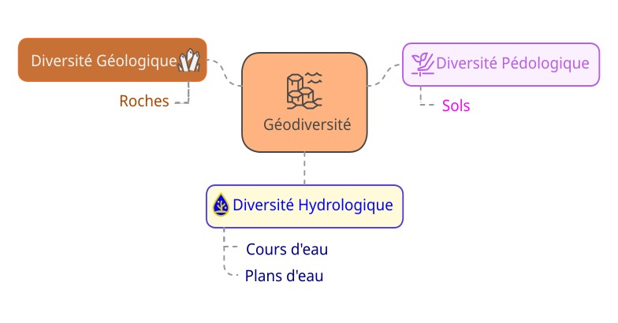
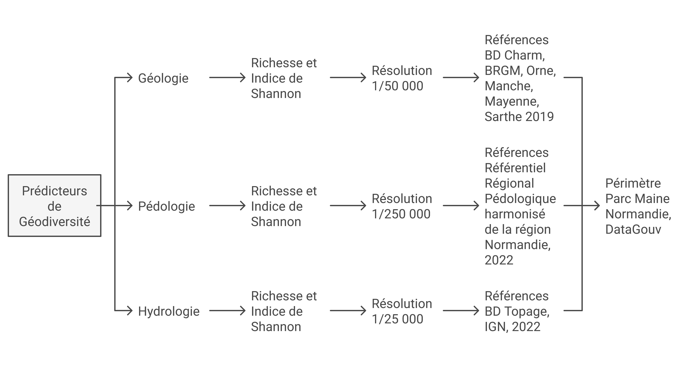
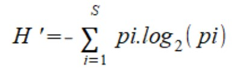
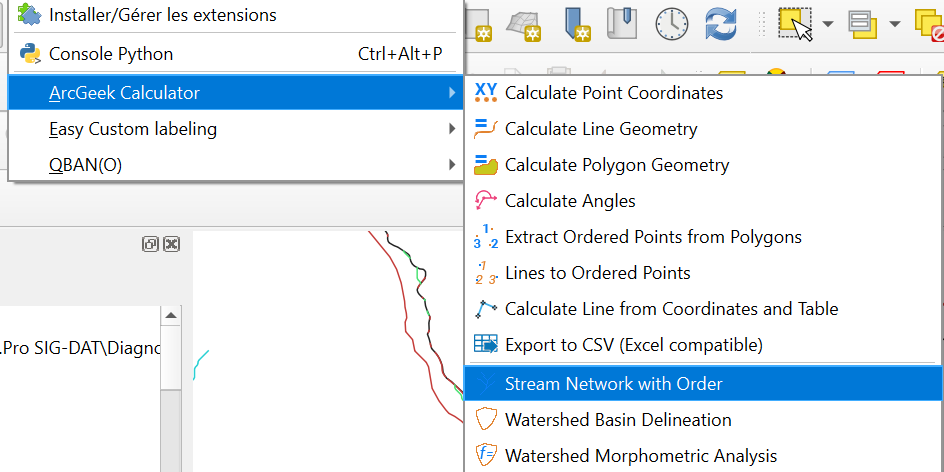
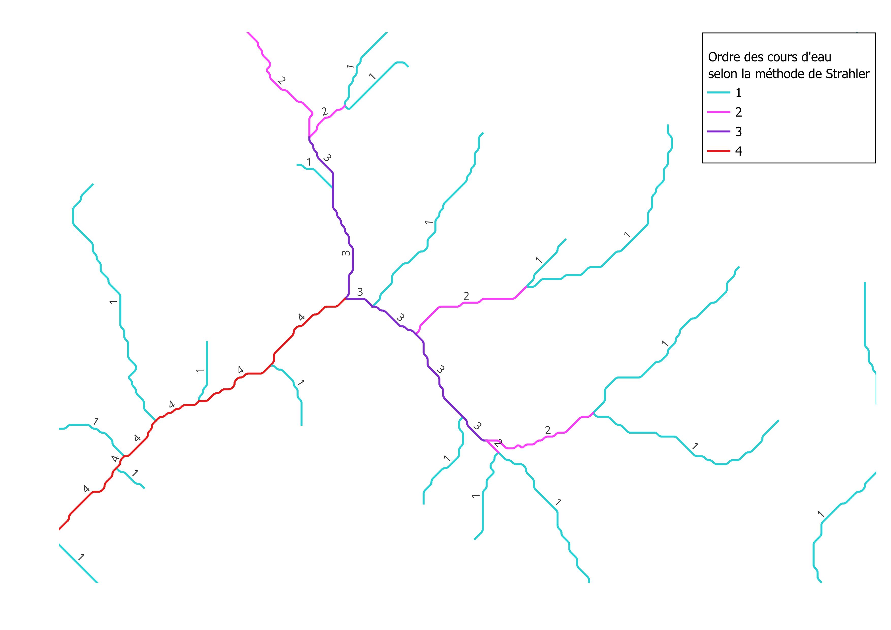
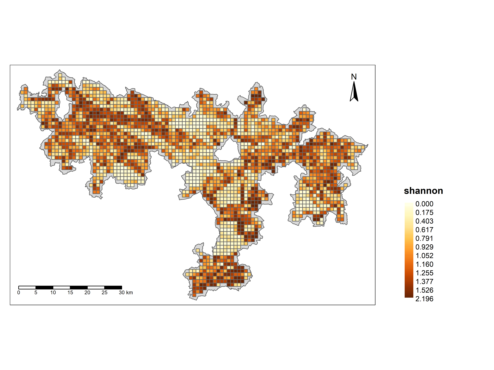
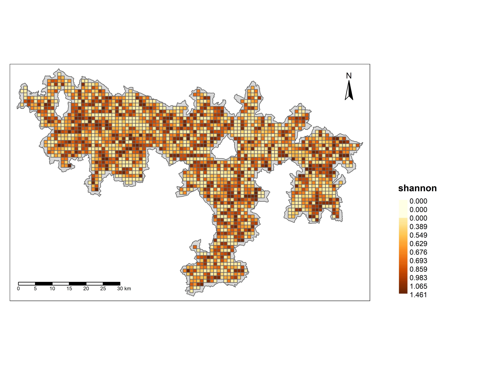
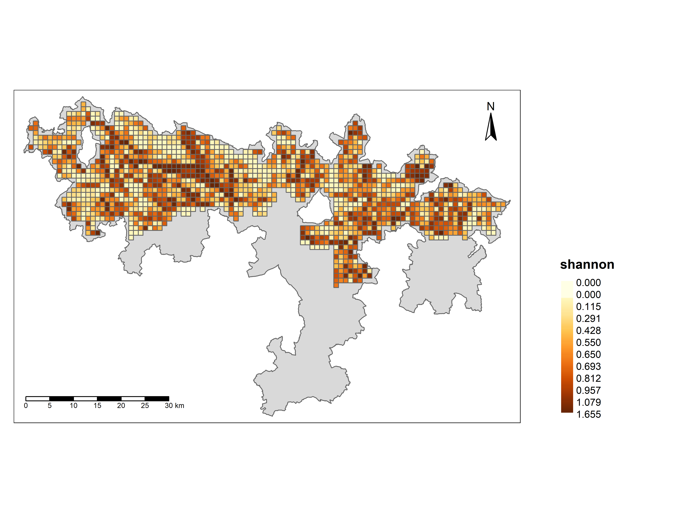
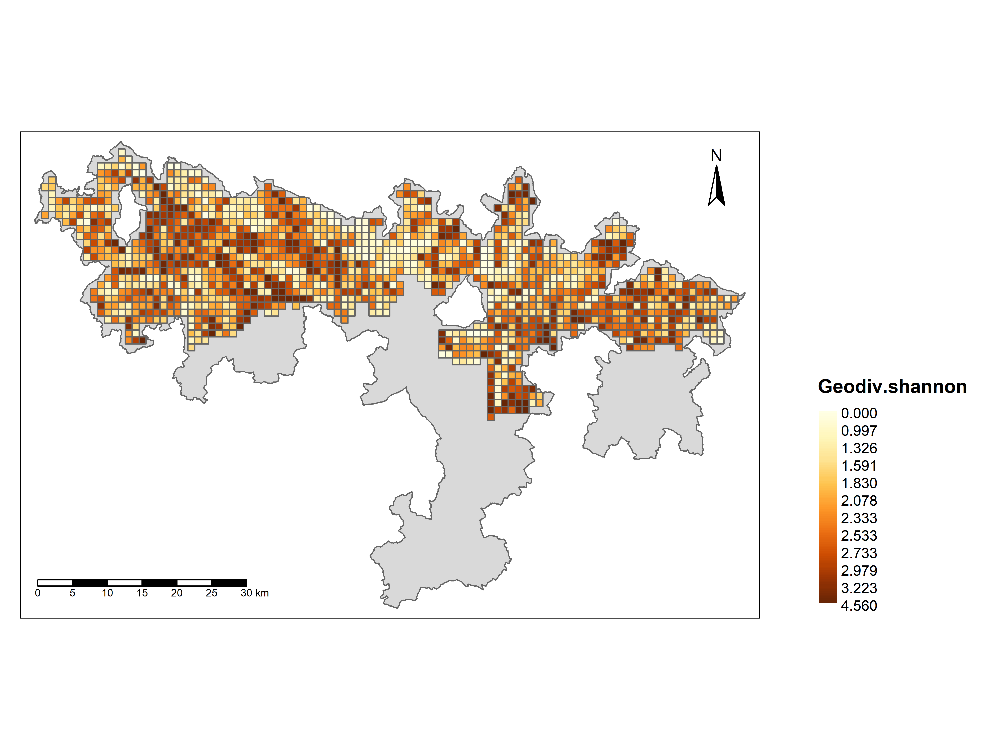

La géodiversité au sein du parc Normandie Maine
I. Définition et méthodologie
La définition retenue pour la géodiversité est empruntée à Sharples (SHARPLES, 1995) : elle représente l’ensemble des éléments des sous-sols, sols et paysages qui, assemblés les uns aux autres, constituent des systèmes organisés, issus de processus géologiques.
Elle comprend :
la diversité géologique : roches, minéraux et fossiles
La diversité géomorphologique : formes du relief et topographie
La diversité pédologique : sols et sédiments
La diversité hydrologique : eaux de surface et souterraines

1. Indice de Shannon
L’indice de Shannon, également connu sous le nom d’indice de diversité de Shannon (ou indice de Shannon-Wiener), est une mesure utilisée en écologie pour quantifier la diversité biologique d’un écosystème. Il combine à la fois la richesse spécifique (le nombre total d’espèces présentes) et l’abondance relative de chaque espèce (la proportion d’individus de chaque espèce par rapport à l’ensemble de la communauté). Sa formule prend en compte la probabilité de rencontrer un caractère précis compris dans un ensemble de caractères utilisés.
1.1 Formulation

H’ correspond à l’indice de Shannon, selon la formulation suivante : pi = l’abondance proportionnelle ou pourcentage d’abondance d’une espèce présente (pi = ni/N). ni = le nombre d’individus dénombrés pour une espèce présente. N = le nombre total d’individus dénombrés, toute espèce confondue. S = le nombre total ou cardinal de la liste d’espèces présentes.
1.2 Interprétation de l’indice de Shannon
Plus l’indice est élevé, plus la diversité est grande. Cela signifie qu’il y a un grand nombre d’entités géologiques, hydrologiques et géologique et que l’abondance entre elles dans l’espace de notre parc est assez équilibrée. Un H’ élevé indique des éléments naturels (géologie, pédologie et hydrologie) diversifiés où aucune entité ne domine trop. Plus l’indice est faible, moins la diversité est grande. Cela peut indiquer une situation où une ou quelques éléments dominent largement, tandis que les autres sont peu nombreuses ou absentes. Valeurs possibles : H’ = 0 : Cela signifie qu’il y a seulement un élément naturel présente (pas de diversité). H’ élevé : Cela correspond à un milieu très diversifiée, avec une répartition plus homogène des types d’éléments naturels.
2. Strahler
L’indice de Strahler est une méthode de classification utilisée principalement en hydrologie et en géomorphologie pour caractériser la hiérarchie des cours d’eau dans un bassin versant. Ce système permet de représenter la complexité et la structure du réseau hydrographique.Il s’accompagne souvent de l’indice d’équitabilité de Piélou pour mesurer à quel point ces catégories sont réparties uniformément dans chaque maille de votre grille.
2.1 Principe de la méthode de Strahler
Les segments de tête (sources) sans affluents sont classés comme de premier ordre (ordre 1). Lorsque deux cours d’eau de même ordre se rejoignent, ils forment un cours d’eau d’un ordre supérieur (ordre n+1). Si deux cours d’eau de différents ordres se rejoignent, le cours d’eau résultant conserve l’ordre du cours d’eau le plus élevé.
2.2 Exemple d’application de l’indice de Strahler sur le cours d’eau du Parc Maine Normandie
A l’aide de Qgis nous avons installé l’extension Arcgeek Calculator qui nous a permit de classer l’ordre des cours d’eau.

2.3 Résultat de la classification

Dans le but de garantir une approche comparable à celle adoptée dans la majorité des études existantes, nous avons choisi de créer un indice global de géodiversité. Cet indice a été construit en additionnant les scores de richesse et les indices de Shannon de nos trois sous-indices : géologie, pédologie et hydrologie.
II. Étude de la géodiversité dans le Parc régional Maine Normandie
Le parc naturel régional Normandie-Maine est un parc naturel régional (PNR), il couvre 257 214 hectares sur 164 communes de l’Orne, de la Manche, de la Mayenne et de la Sarthe et s’étend ainsi sur deux régions :la Normandie et les Pays de la Loire.
Dans le cadre de notre étude dans ce parc nous allons plus nous intéresser sur sa géodiversité en combinant de la géologie , de la pédologie et de l’hydrologie.
1. Diversité géologique
my_packages <- c("sf", "terra", "vegan", "tidyverse", "ggplot2","tmap","mapview","purrr","dplyr","tidyr")
#Vérifier si les packages sont installés
missing_packages <- my_packages[!(my_packages %in% installed.packages()[,"Package"])]
# Installation des packages manquants depuis le CRAN
if(length(missing_packages)) install.packages(missing_packages,
repos = "http://cran.us.r-project.org")
# Chargement des packages nécessaires
library(sf)
library(tmap)
library(dplyr)
library(tidyr)
library(purrr)
geol <- read_sf("Data/Geol_parc.shp")
emprise<-st_read("Data/perimetre_2024.shp")
cellsize = c(1000)
divgeol <- function(emprise, cellsize, geol) {
# Vérification des inputs
stopifnot(inherits(emprise, "sf"), inherits(geol, "sf"))
# Création de la grille
grid <- st_make_grid(x = emprise, cellsize = cellsize) %>%
st_as_sf() %>%
st_intersection(emprise) %>%
mutate(ID = row_number(), surf = as.numeric(st_area(.))) # ID unique et surface
# Filtrer les mailles à l'intérieur de l'emprise
grid <- grid[st_contains(emprise, grid)[[1]], ]
# Intersection avec les polygones litho
geol_grid <- st_intersection(geol, grid) %>%
mutate(surface_intersection = as.numeric(st_area(.))) # Surface après intersection
# Agrégation par maille et lithologie
part_surface_geol <- geol_grid %>%
st_drop_geometry() %>%
group_by(ID, DESCR) %>%
summarise(surface_geol = sum(surface_intersection), .groups = "drop")
# Calcul des pourcentages par maille
part_geol <- part_surface_geol %>%
group_by(ID) %>%
mutate(surface_totale = sum(surface_geol),
part_geol = (surface_geol / surface_totale) * 100) %>%
ungroup() %>%
select(ID, DESCR, part_geol) %>%
pivot_wider(names_from = DESCR, values_from = part_geol, values_fill = 0)
# Calcul de l'indice de Shannon
library(vegan)
part_geol$shannon <- diversity(part_geol %>% select(-ID), index = "shannon")
# Jointure des résultats avec la grille
grid <- grid %>% left_join(part_geol, by = "ID") %>% na.omit()
return(grid)
}
library(furrr)
plan(multisession) # Plan de parallélisation
resultsgeol <- future_map(
cellsize,
~ divgeol(emprise, cellsize = ., geol = geol),
.progress = TRUE
)
names(resultsgeol) <- paste0("grid_", cellsize, "m")
##Cartographie des resultats
tmaps <- map(
resultsgeol,
~ tm_shape(.x) +
tm_basemap("Esri.WorldImagery") +
tm_polygons(
col = "shannon",
style = "quantile",
n = 6,
palette = "viridis",
title = paste("Diversité géologique (maille:", unique(.x$cellsize), "m)")
) +
tm_layout(legend.outside = TRUE)
)
tmap_mode("view")
tmaps[[1]]
#Export en PNG
#tmap_save(tmap_arrange(tmaps), filename = "diversite_geologique.png", width = 8, height = 6, dpi = 300)
# Exporter le data frame combiné en CSV
#write.csv(combined_results, "results_geol.csv", row.names = FALSE)1.1 Carte de la diversité géologique

2. Diversité hydrologique
library(sf)
library(terra)
library(dplyr)
library(qgisprocess)
library(tmap)
library(vegan)
# Chargement des données
plans_eau <- rast("Data/Plan_deau.tif")
cours_eau <- rast("Data/Cours_deau2.tif")
emprise <- st_read("Data/perimetre_2024.shp")
resolutions <- c(1000) # Résolutions pour les grilles
# Fonction principale
calcul_hydro <- function(plans_eau, cours_eau, emprise, resolutions) {
list_cartes <- list() # Pour stocker les cartes
for (res in resolutions) {
# Création de la grille
grid <- emprise %>%
st_make_grid(cellsize = res) %>%
st_as_sf() %>%
mutate(id_cell = 1:nrow(.)) %>%
st_filter(y = emprise, .predicate = st_intersects)
# Suppression des mailles touchant les bordures
grid <- grid[st_contains(emprise, grid, sparse = FALSE), ]
# Calcul des histogrammes zonaux pour cours d'eau
path_hist_zonal_cours <- paste0(
"hist_zonal_cours_eau_maille_",
res, "m.gpkg"
)
cours_eau_hist_zonal <- qgis_run_algorithm(
"native:zonalhistogram",
INPUT_RASTER = cours_eau,
RASTER_BAND = 1,
INPUT_VECTOR = grid,
COLUMN_PREFIX = "hist_zonal",
OUTPUT = path_hist_zonal_cours
) %>%
st_as_sf()
# Calcul des histogrammes zonaux pour plans d'eau
path_hist_zonal_plans <- paste0(
"hist_zonal_plans_eau_maille_",
res, "m.gpkg"
)
plans_eau_hist_zonal <- qgis_run_algorithm(
"native:zonalhistogram",
INPUT_RASTER = plans_eau,
RASTER_BAND = 1,
INPUT_VECTOR = grid,
COLUMN_PREFIX = "hist_zonal",
OUTPUT = path_hist_zonal_plans
) %>%
st_as_sf()
# Fusion des données et calcul des indices
Hydro_def <- st_drop_geometry(cours_eau_hist_zonal) %>%
left_join(st_drop_geometry(plans_eau_hist_zonal), by = "id_cell") %>%
dplyr::select(-starts_with("hist_zonalNODATA")) %>%
mutate_all(~ replace_na(., 0))
tableau_final <- Hydro_def %>%
group_by(id_cell) %>%
summarise(
S = specnumber(across(starts_with("hist_zonal"))),
shannon = diversity(across(starts_with("hist_zonal"))),
pielou = shannon / log(S)
)
# Création de la carte
tableau_final_sf <- left_join(tableau_final, grid, by = "id_cell") %>%
st_as_sf()
map <- tm_shape(emprise) +
tm_polygons() +
tm_shape(tableau_final_sf) +
tm_polygons("shannon", style = "order", n = 12) +
tm_layout(
legend.outside = TRUE,
legend.position = c(0.25, 0),
legend.frame = FALSE,
legend.title.fontface = "bold",
legend.outside.size = 0.22
) +
tm_scale_bar(position = c("left", "bottom"), text.size = 0.5) +
tm_compass(position = c("right", "top"))
# Export de la carte en PNG
titre_carte <- paste0(
"Diversité",
res, "_hydrologie.png"
)
tmap_save(map, filename = titre_carte, width = 8, height = 6, dpi = 600)
#list_cartes[[as.character(res)]] <- map
# Export des données en CSV
# resultat_final_hydro <- "C:/Users/mamba/Desktop/L.Pro SIG-DAT/SIG et Analyse spatiale/TPE/Projet_Ecotone_GeoDiv/Données/csv_hydrologie.csv"
# write.csv(tableau_final_sf, file = resultat_final_hydro, row.names = FALSE)
}
# Affichage des cartes
#print(tmap_arrange(list_cartes, nrow = 2))
}2.1 Résultat de la carte de la diversité hydrologique

3. Diversité pédologique
library(terra)
library(sf)
library(mapsf)
library(tmap)
library(dplyr)
library(questionr)
library(raster)
library(ggplot2)
library(vegan)
##ajout de couche shp(zone d'etude et pedologie)
perimetre_2024 <- st_read("Data/perimetre_2024.shp")
sol_normand <-st_read("Data/Pedologie_PMN.shp")
##emprise et des resolutions
emprise = perimetre_2024
resolutions = c(1000)
list_pedologie <- list()
##calcul de la diversite
calcul_diversite <- function(sol_maine, emprise, resolutions) ## définition du fonction qui comprend 3 arguments
list_pedologie <- list()
for (calcul_diversite in list_pedologie){
##creation de la grille qui intersecte la zone emprise
grille <- st_make_grid(emprise, cellsize = 1000, square = TRUE)
grille <- st_sf(geometry = grille) ## conversion de la grille en sf
##découpage grille
grille <- grille %>% mutate(id_cell = 1:nrow(.)) ## ajout d'un identifiant id_cell qui contient les valeurs de la cellule totale
# Filtrer les mailles à l'intérieur de l'emprise
grille <- grille[st_contains(emprise, grille)[[1]], ] # filtrer les cellules de la grille qui intersectent l'emprise
## calcul de la surface de sol dans chaque maille
surface_sol <- st_intersection(grille, sol_normand) %>% ## creer une intersection entre la grille et la couche pedologique
mutate(area = st_area(.)) %>% ##Calcule l'aire de chaque intersection.
st_drop_geometry() %>% ##
group_by(id_cell, nom_type) %>%
summarise(surface = sum(area)) %>%
mutate(as.double(surface), nom_type = as.character(nom_type))
##calcul d=indice de shanon
indice_shanon <- surface_sol %>%
group_by(id_cell) %>%
mutate(S = n_distinct(nom_type),
shannon = diversity(surface),
pielou= diversity(surface)/log(S))
##tableau final
tableau_final <- indice_shanon %>%
group_by(id_cell) %>%
summarise(S = first(S),
shannon = first(shannon),
pielou = first(pielou)) %>%
left_join(., grille, by="id_cell")
tableau_final_sf <- st_as_sf(tableau_final)
map <- tm_shape(emprise) +
tm_polygons() +
tm_shape(tableau_final_sf) +
tm_polygons("shannon", style="order", n=12) +
tm_layout(legend.outside = TRUE,
legend.position = c(0.25, 0),
legend.frame = FALSE,
legend.title.fontface = "bold",
legend.outside.size = 0.22) +
tm_scale_bar(position=c("left","bottom"), text.size = 0.5) +
tm_compass(position= c("right","top"))
## carte
#tmap_mode("plot")
#tm_shape(emprise) + tm_polygons() +
# tm_shape(tableau_final_sf) + #tm_polygons("shannon", style = "order", n = 5)
#Export png
#titre_carte <- paste("C:/Users/mamba/Desktop/L.Pro SIG-DAT/SIG et Analyse spatiale/TPE/Projet_Ecotone_GeoDiv/Données",
# resolutions, "pédologie1000PMN.png", sep = "")
#tmap_save(map, filename = titre_carte, width = 8, height = 6, dpi = 600)
#list_cartes[[as.character(res)]] <- map
## export csv tableau fin
#resultat_final_pedo <- paste("C:/Users/mamba/Desktop/L.Pro SIG-DAT/SIG et Analyse spatiale/TPE/Projet_Ecotone_GeoDiv/Données/csv_pedologie.csv")
#resultat_final <- write.csv(tableau_final_sf, file = resultat_final_pedo)
}3.1 Carte de la diversité pédologique

4. Fusion de la géodiversité du Parc Maine Normandie
# Packages nécessaires
my_packages <- c("sf", "terra", "vegan", "tidyverse", "ggplot2", "tmap", "mapview", "data.table")
# Vérification et installation des packages manquants
missing_packages <- my_packages[!(my_packages %in% installed.packages()[, "Package"])]
if (length(missing_packages)) install.packages(missing_packages, repos = "http://cran.us.r-project.org")
# Chargement des packages
lapply(my_packages, library, character.only = TRUE)
library(dplyr) # Pour éviter les conflits avec `select()`
# Résolutions pour la grille
resolutions <- c(1000)
# Boucle sur chaque résolution
for (res in resolutions) {
# Chargement des fichiers CSV
hydro <- read.csv("csv/hydrologie.csv", sep = ";")
geol <- read.csv("csv/geologie.csv", sep = ";")
pedo <- read.csv("csv/pedologie.csv", sep = ";")
# Fusionner les DataFrames sur `id_cell`
combined_df <- hydro %>%
inner_join(geol, by = "id_cell") %>%
inner_join(pedo, by = "id_cell")
# Calcul des indices de diversité
geodiv <- combined_df %>%
mutate(
# Calculer Geodiv.S en ignorant la pédologie si manquante
Geodiv.S = ifelse(is.na(Pedo.S), Hydro.S + Geol.S, Hydro.S + Geol.S + Pedo.S),
# Calculer Geodiv.shannon en ignorant la pédologie si manquante
Geodiv.shannon = ifelse(is.na(Pedo.shannon), Hydro.shannon + Geol.shannon, Hydro.shannon + Geol.shannon + Pedo.shannon),
# Calculer Geodiv.pielou en ignorant la pédologie si manquante
Geodiv.pielou = ifelse(is.na(Pedo.pielou), Hydro.pielou + Geol.pielou, Hydro.pielou + Geol.pielou + Pedo.pielou)
) %>%
dplyr::select(id_cell, Geodiv.S, Geodiv.shannon, Geodiv.pielou) # 🔹 Correction ici
# Chargement de l'emprise
emprise <- st_read("Data/perimetre_2024.shp")
# Création de la grille
grid <- emprise %>%
st_make_grid(cellsize = res) %>%
st_as_sf() %>%
mutate(id_cell = 1:nrow(.)) %>%
st_filter(emprise, .predicate = st_intersects)
# Filtrer les mailles à l'intérieur de l'emprise
grid <- grid[st_contains(emprise, grid)[[1]], ]
# Conversion en sf
geodiv_sf <- geodiv %>%
left_join(., grid, by = "id_cell") %>%
st_as_sf()
# Colonnes à visualiser
columns_to_map <- c("Geodiv.S", "Geodiv.shannon", "Geodiv.pielou")
# Génération des cartes
for (col in columns_to_map) {
map <- tm_shape(emprise) +
tm_polygons() +
tm_shape(geodiv_sf) +
tm_polygons(col, style = "order", n = 12) +
tm_layout(
legend.outside = TRUE,
legend.position = c(0.25, 0),
legend.frame = FALSE,
legend.title.fontface = "bold",
legend.outside.size = 0.22
) +
tm_scale_bar(position = c("left", "bottom"), text.size = 0.5) +
tm_compass(position = c("right", "top"))
# Exportation des cartes
titre_carte <- paste0("Géodiversité",
col, "_maille_", res, "m_parc_maine_normandie.png")
tmap_save(map, filename = titre_carte, width = 8, height = 6, dpi = 600)
}
}4.1 Carte de la géodiversité


4.2 Analyse
La géodiversité du Parc Naturel Régional Normandie-Maine est marquée par une forte hétérogénéité spatiale résultant de la combinaison des composantes géologiques, pédologiques et hydrologiques. L’indice de Shannon appliqué à la géodiversité révèle des valeurs élevées principalement dans le nord et l’est du parc, suggérant une richesse en formations géologiques variées, probablement associées à une alternance entre substrats anciens et formations sédimentaires plus récentes. Cette diversité géologique influence directement la diversité pédologique, bien que l’absence de données sur les sols dans la partie sud constitue une limite importante à l’analyse. L’hydrologie joue également un rôle clé, avec la présence de cours d’eau et de zones humides qui façonnent l’érosion et la composition des sols, contribuant ainsi à la variabilité des conditions environnementales.
4.3 Limite
La géodiversité du Parc Naturel Régional Normandie-Maine présente une structuration spatiale marquée par une diversité géologique élevée dans le nord et l’est du territoire,en raison de la présence de formations variées incluant des substrats anciens et des couches sédimentaires plus récentes. Cette diversité géologique influe directement sur la diversité pédologique et hydrologique, façonnant ainsi la répartition de l’indice de Shannon. Toutefois, une limite majeure de cette analyse réside dans l’absence de données pédologiques dans la partie sud du parc, ce qui introduit un biais significatif dans l’interprétation des résultats. En effet, sans ces informations, il est impossible de déterminer si cette zone présente une faible géodiversité réelle ou si elle aurait des valeurs comparables à celles observées dans le reste du parc. Cette lacune empêche également d’établir des corrélations précises entre la diversité géologique et les dynamiques pédologiques, ce qui réduit la portée des conclusions sur l’interaction entre ces composantes. De plus, cette absence de données crée une rupture visuelle nette sur la carte, qui pourrait être mal interprétée comme une zone homogène ou dépourvue d’intérêt, alors qu’elle pourrait en réalité contenir des éléments de géodiversité notables.
Conclusion
En conclusion, l’analyse de la géodiversité au sein du Parc Naturel Régional Normandie-Maine met en évidence une forte hétérogénéité spatiale, influencée par la diversité des formations géologiques, pédologiques et hydrologiques. L’indice de Shannon appliqué à cette étude permet de révéler des zones de forte géodiversité, principalement concentrées dans le nord et l’est du territoire, là où les interactions entre substrats anciens, types de sols variés et dynamiques hydrologiques sont les plus marquées. Toutefois, l’interprétation de ces résultats est limitée par l’absence de données pédologiques dans la partie sud du parc, ce qui biaise l’analyse et empêche une vision complète du territoire. Cette lacune souligne la nécessité de compléter les informations disponibles pour affiner la compréhension des relations entre les composantes de la géodiversité. Malgré ces limites, cette étude offre une première approche cartographique précieuse pour la gestion et la conservation des milieux naturels du parc, mettant en lumière les zones à forte diversité qui méritent une attention particulière. Pour une analyse plus exhaustive, l’intégration de nouvelles données et une approche multi-échelle permettraient d’affiner les résultats et de mieux appréhender les interactions complexes entre géologie, pédologie et hydrologie.